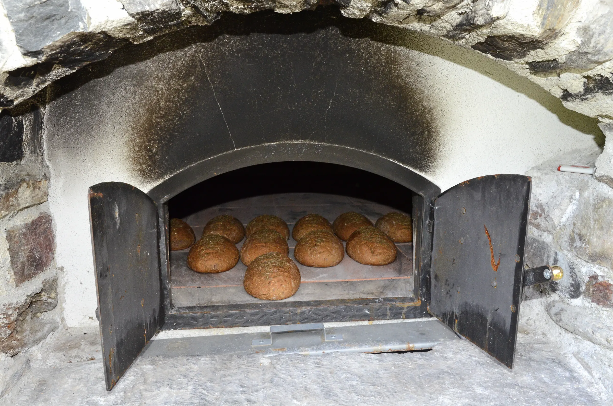
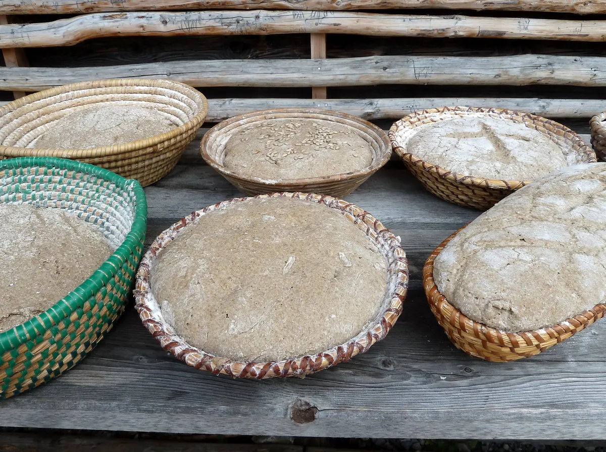

Stone-oven rye in Graz
Sourdough rye with caraway, fired at 280 degrees on a stone floor since 1962. Forty loaves a morning, gone by noon.
Saturday orders close on Thursday.

The dough rests overnight in straw baskets
Rye, water, salt and a starter older than the shop. Sixteen hours in the cold room, then each loaf is turned out by hand onto the peel.

Four loaves, every morning
Order by Thursday for Saturday. Each loaf comes in a linen bag. Prices per loaf.
- Caraway rye, 1 kgEUR 6.40
The house loaf: dark crust, a tight moist crumb.
- Spelt and seed, 750 gEUR 5.80
Sunflower, linseed and pumpkin in a lighter dough.
- Farmer's wheat, 1 kgEUR 4.90
Wheat and a little rye; open crumb, thin crust.
- Saturday box, four loavesEUR 19.00
One of each, collected from 7:00.

Choose how dark you like the crust
We pull a tray early for anyone who asks. Say so when you order.

Visit the bakery on Sporgasse
Collection in Graz old town
- Monday to Friday
- 7:00 to 18:00
- Saturday
- 7:00 to 13:00
- Sunday
- Closed
Old town delivery on Tuesday and Friday. Order by 18:00 for delivery by 7:45.